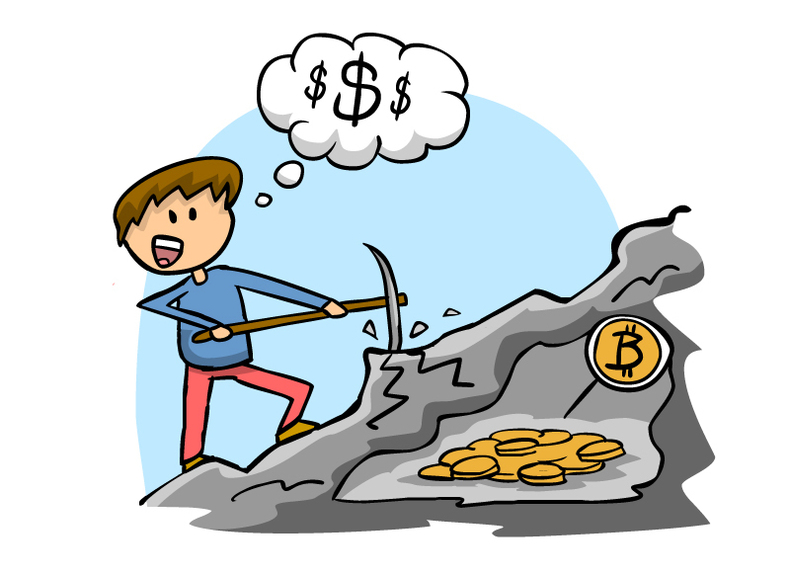

Ingen sentral bank styrer valutaen Bitcoin, så hvem passer da på? Hvem er banken liksom? Det er altså her 'minerene' kommer inn. Det er 'minerene' som prosesserer transaksjoner, og sikrer all eierskapshistorikk. Så hvem er de, og hvordan gjør de dette?
De fleste som leser denne artikkelen har nok hørt om fenomenet 'mining' før, eller graving som det litt rart kan kalles på norsk. Kanskje dere har hørt at 'mining' foregår ved at en skal løse en vanskelig matematisk oppgave, og at det fungerer som et stort lotteri der førstemann som klarer å løse oppgaven får gevinsten. Denne forenklingen er forsåvidt riktig.
'Minere' kan hvem som helst bli. En er dog nødt til å disponere billig og spesialbygd datakraft, hvis en vil tjene penger på det i dag. Men om du bare er nysgjerrig eller ønsker å gjøre det av idealistiske grunner, så kan du sette i gang å 'mine' med et enkelt program på PC'en din nå.
I begynnelsen av Bitcoin sin historie var det derimot veldig lukrativt å 'mine' med sin private PC. I dag vil du nok gå kraftig i tap økonomisk sett. Det skyldes den enkle grunn, at maskinen din vil forbruke mer strøm enn du klarer å tjene på 'miningen', samt at du sannsynligvis vil bli gammel før du ser noen betydelige inngående kontantstrømmer.